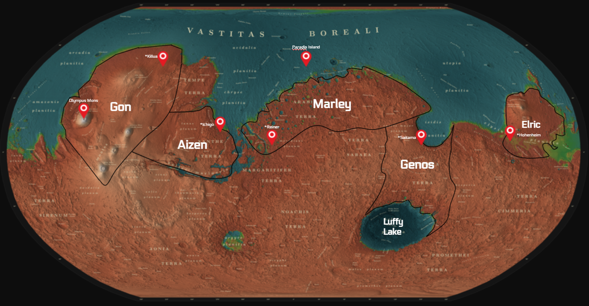

Territories
Mars is home to 5 major territories as well as other smaller settlements. There are many impact craters from asteroids, lakes, and immense mountains. The views are just great!

Map of Mars' territories and geological features
-
GON
The largest territory in Mars by landmass and 2nd-most in population, Gon is home to major landmarks such as Olympus Mons. It's capital city, Killua, is known for its amazing skyline and unique food. These key features make it the #1 tourist destination on Mars.
-
MARLEY
With the highest population and the 2nd largest land-area, Marley is a must visit! One of its territories, Paradis Island, is a popular vacation spot with titanic skyscrapers and sandstorm walls. Marley's capital city of Reiner is home to the best space exploration industry in the solar system!
-
GENOS
Genos is a territory known for its underwater settlements. Since it is connected to both Luffy Lake and Vastitas Borealis, Genos has an aquatic industry with immense potential. Saitama, Genos' capital city, is half above-ground and half underwater!
-
AIZEN
Aizen is the most recently established of the five territories and it is already the leader in the farming industry. Aizen uses specialized,
eco-friendly farming techniques to help it become the main producer of martian food. Its capital city of Ichigo is incredibly green, a huge accomplishment for a city on the red planet.
-
ELRIC
Elric was the first established territory and has the most developed mining industry. Using advanced technology, many companies are able to mine valuable metals such as magnesium, titanium, tungsten, chromium, and europium.